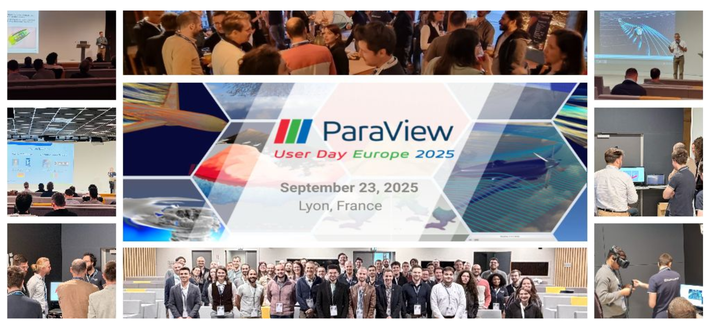
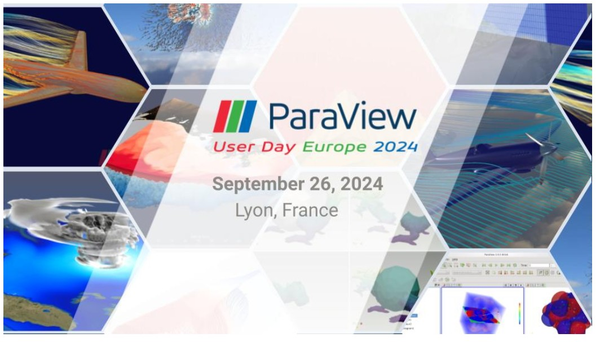
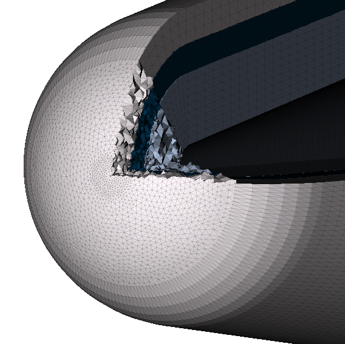
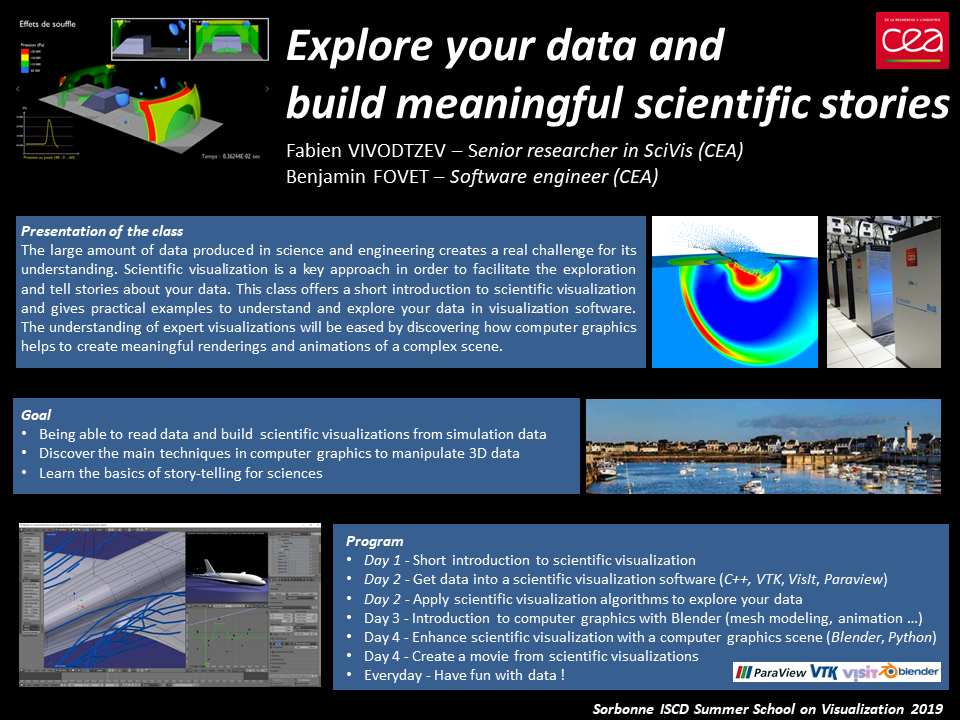
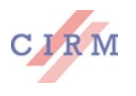
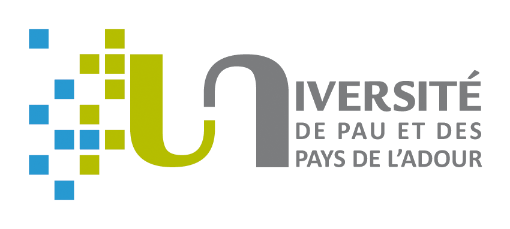
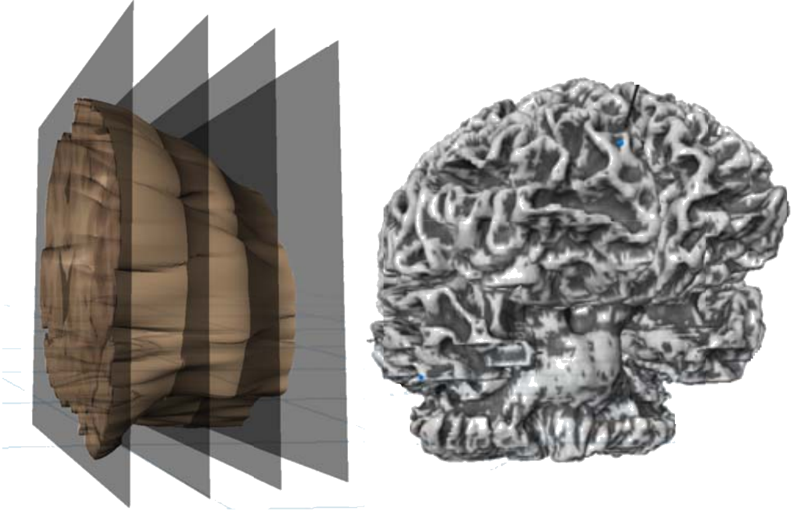

M. Stauffert, J. Amorosetti and F. Vivodtzev
ParaView User Day Europe 2025 , presentation at the Focus session, EPITA Lyon, France, September 23th, 2025.

M. Stauffert, F. Vivodtzev
ParaView User Day Europe 2024, presentation at the Focus session, ENS Lyon, France, September 26th, 2024.
Master program tutorial classes at ENSEIRB-Matmeca in computer sciences option CISD (Calcul Intensif et Sciences des Données) using Python, Paraview and TTK in collaboration with Julien Tierny.
Bordeaux INP, 2022
Master program tutorial classes at ENSEIRB-Matmeca in computer sciences option CISD (Calcul Intensif et Sciences des Données)
Bordeaux INP, 2021

F. Vivodtzev, T. Hocquellet, M. Lecouvez
ECCOMAS 2020, presentation at the 14th WCCM and European Community on Computational Methods in Applied Sciences Congress 2020.
Master program tutorial classes at ENSEIRB-Matmeca in computer sciences option CISD (Calcul Intensif et Sciences des Données)
Bordeaux INP, 2020

Classes in the ISCD (Institut des Sciences, du Calcul et des Données), Summer school on computer graphics and scientific visualization from Sorbonne Université organized by Pascal Frey
Roscoff, 2019
Master program tutorial classes at ENSEIRB-Matmeca in computer sciences option CISD (Calcul Intensif et Sciences des Données)
Bordeaux INP, 2019

Classes in the ISCD (Institut des Sciences, du Calcul et des Données), Summer school on computer graphics and scientific visualization from Sorbonne Université organized by Pascal Frey
Roscoff, 2016

Fabien Vivodtzev
CIRM, Luminy, January 27-29, 2013.

Master program tutorial classes from the Master Sciences and Technologies in computer sciences from Université de Pau et des Pays de l’Adour (UPPA)
Pau, 2013
D.Nassiet, F.Vivodtzev
Forum TeraTec 2012 , Workshop on Visualization, optimization and performance, , 2012.
Master program tutorial classes from the Master Sciences and Technologies in computer sciences from Université de Pau et des Pays de l’Adour (UPPA)
Pau, 2010

A. R. Fuller, B. Hamann, K. I. Joy, Edward G. Jones, L. Linsen, B. A. Olshausen, T. W. Slankard, J. Stone, F. Vivodtzev, G. H. Weber, D. F. Wiley, P. C. Yau
Presented at the Society for Neuroscience, 34th annual meeting, San Diego, California, 2003.
{kind=link}